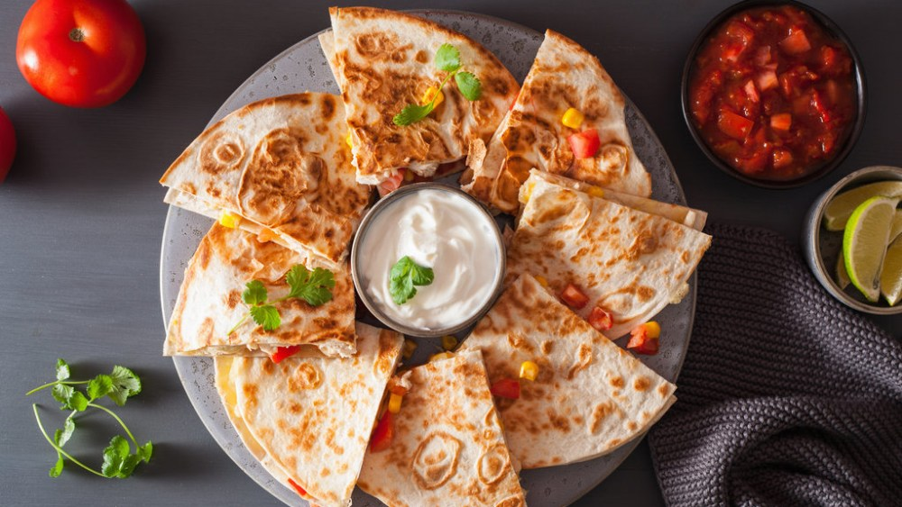
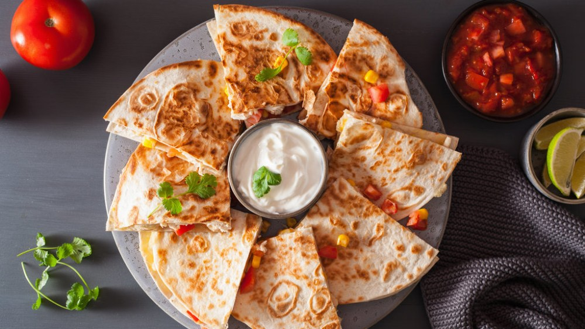

Quesadilla is a simple Mexican snack consisting of a flour or corn tortilla filled with cheese that melts well. It is
commonly folded in half and consumed. A quesadilla can also have some other ingredients on the inside such as meats, beans,
or potatoes, but cheese is always mandatory (with the exception of Mexico City, where cheese in a quesadilla is often an
afterthought).
Sometimes, it is cut into wedges and served with salsa or guacamole on the side, and it can be topped with vegetables such
as diced tomatoes, onions, lettuce, or hot chiles. The origins of quesadilla are somewhat murky, but it is known that the
cheese was brought to Mexico by the Spaniards along with other dairy products in colonial times, and the thin flatbreads
were already a staple of the Mesoamerican people.
The Spaniards named the dish quesadilla (little cheesy thing). In northern Mexico, and parts of the southwestern United
States, flour tortillas are more common than corn tortillas, so quesadillas with flour tortillas started to gain popularity
throughout the United States as well.
Today, there are numerous varieties and fillings for quesadillas such as chorizo, Oaxaca cheese, epazote, and squash
blossoms.
QUESADILLA
 
